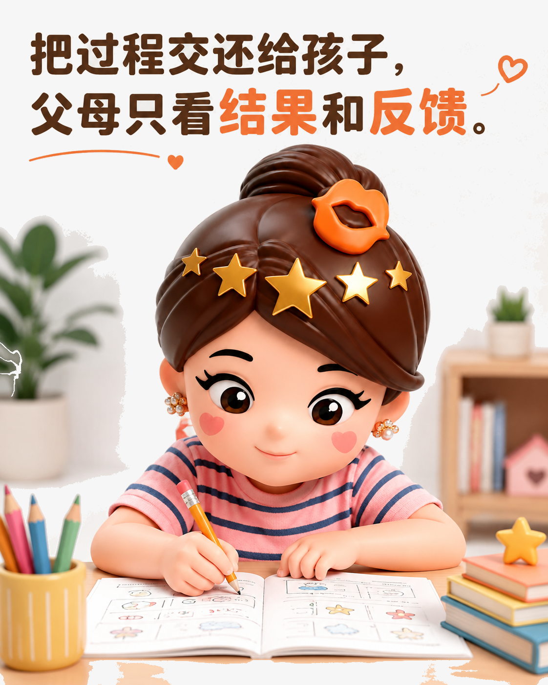
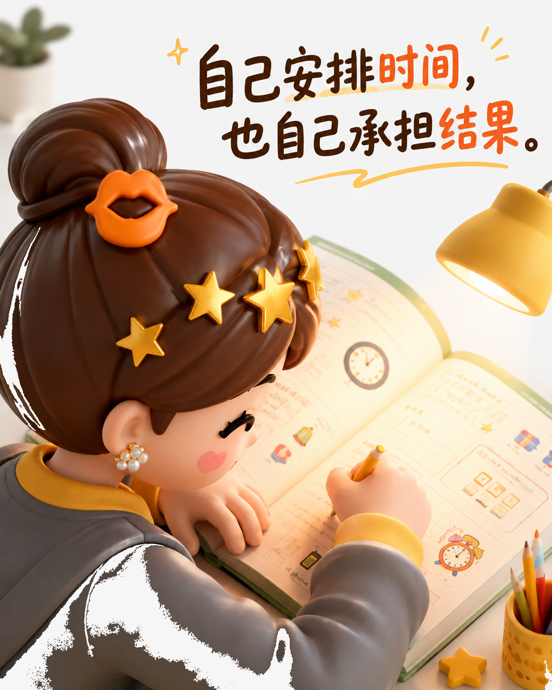

孩子的作业，最终要由谁负责？
真正的放手，不是父母退出，而是把责任、反馈和选择逐步还给孩子。
先分清：陪伴不等于代办
孩子的作业属于孩子的责任。父母可以关心结果、了解老师反馈，却不必坐在旁边逐题盯着，更不要把每个错误都立刻指出。持续监视会打断专注，也容易让孩子把学习理解成“替父母完成任务”。
更稳妥的做法是按年龄逐步放手：先允许孩子为粗心或漏交付出小成本，再一起复盘事实。错题就讨论错题，没完成就追问原因，不用“你怎么总是……”给问题贴上能力标签。

把后果变成真实的反馈
放手不代表没有边界。可以和孩子提前约定：作业由自己安排，老师的评价要面对，因拖延造成的娱乐减少也要兑现。一次做得潦草，先让学校的反馈抵达，再和孩子一起看清原因；当他认真完成、获得进步时，也要及时肯定。
这种处理把“惩罚”变成了因果链：选择影响结果，结果提示调整。父母不替孩子遮掩，也不靠情绪施压，孩子才会慢慢学会对自己的决定负责。

自驱力从“我来做”开始
年纪小的孩子动作慢、做得不够好，最考验父母的耐心。能自己涂色、连线、整理书包，就让他自己完成；成人只提供必要的提示，不抢走最后一步。早期多花一点时间，往往是在为今后的独立节省时间。
到了中学，科目变多，父母可以询问任务量，却把排期交回去。孩子偶尔手忙脚乱并不可怕，重要的是在一次次调整中形成方法。父母真正要放下的不是责任，而是焦虑式控制；真正要保留的是规则、沟通和必要的支持。